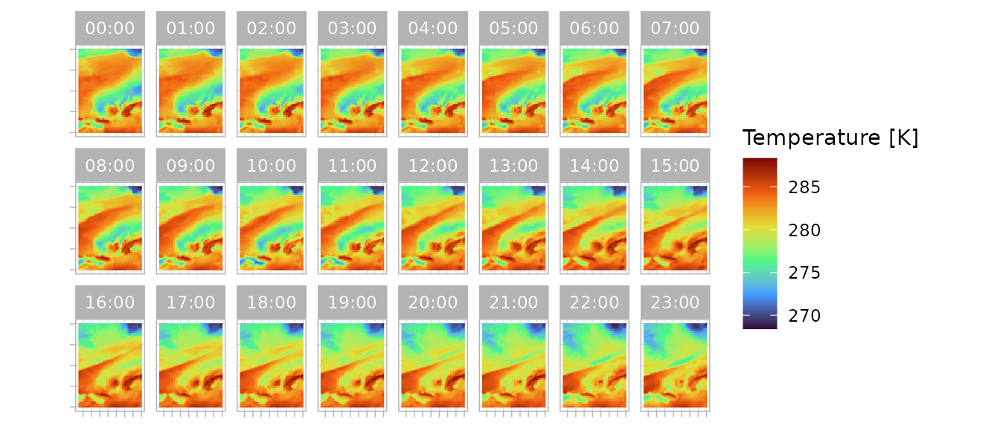

Introduction
When obtaining data from Copernicus Climate Data Service you cannot
download the data directly. You need to know which data you want, submit
a request for a specific dataset. Wait for your request to complete, and
if successful, download the data. The CopernicusClimate
package has functions to facilitate this process. This vignette will
walk you through the different steps to download data.
But before you can even get started, there are some things you have to prepare first, as explained in the following section.
Prerequisites
Access token
This R package is built around the Application Programming Interface (API) provided by C3S. Many of the features of this API require to identify yourself, for which a ‘key’ or API token is used. You can get one by creating an account at https://cds.climate.copernicus.eu/profile.
Once you have an account you can generate (or refresh) an API key.
You can use this token by means of the token argument in
many of the functions of this package. But rather then providing the key
separately each time, you can use the key throughout your R session by
setting it once with cds_set_token().
However, if you want to share your work, it is not very secure to
keep your strictly personal key hard coded in your script. Furthermore,
setting the key with cds_set_token() does not persist
across sessions. Instead, you could set it as an option in your
.rprofile file, or as a environmental variable on your
system. In both cases the variable should be named
CDSAPI_KEY. This variable is automatically picked up by
cds_get_token() and you don’t have to specify it anywhere
in your script.
You can check if your token works with
cds_token_works():
library(CopernicusClimate)
message(
"The machine that rendered this vignette ",
ifelse(
cds_token_works(), "has", "does not have"),
" a working token")
#> The machine that rendered this vignette has a working tokenLicences
In order to download datasets you need to accept its accompanying
licence. You can use cds_dataset_form() to inspect under
which licence a dataset is provided, like so:
library(dplyr)
licence_info <-
cds_dataset_form("reanalysis-era5-pressure-levels") |>
filter(name == "licences")
licence_info <- licence_info$details[[1]]$details$licences[[1]]
print(licence_info)
#> $id
#> [1] "cc-by"
#>
#> $revision
#> [1] 1
#>
#> $label
#> [1] "CC-BY licence"
#>
#> $contents_url
#> [1] "https://object-store.os-api.cci2.ecmwf.int:443/cci2-prod-catalogue/licences/cc-by/cc-byv1_2b61eb0b42e053566cb9447c1d2847a69a275c095e00fca00bad1bf5326a9432.md"
#>
#> $attachment_url
#> [1] "https://spdx.org/licenses/CC-BY-4.0"
#>
#> $spdx_identifier
#> [1] "CC-BY-4.0"You can accept this licence by calling
cds_accept_licence(licence_info$id, licence_info$revision).
You only need to do this once for every licence. Accepted licences are
stored with your account and can be listed with
cds_accepted_licences(). Without accepting required
licences you cannot submit a successful request for downloading it.
Finding datasets
Websites
If you want a visual interface for exploring available datasets, you can use your web browser and visit either the Climate Data Store or STAC catalogue. Both allow you to navigate through the treasures of information, and identify which dataset best serves your needs.
Programatically
You can also use this R package to look for datasets. You could start by listing them all:
cds_list_datasets()
#> # A tibble: 124 × 16
#> type id stac_version title description keywords license extent
#> <chr> <chr> <chr> <chr> <chr> <list> <chr> <list>
#> 1 Collection deri… 1.0.0 ERA5… "ERA5 is t… <list> CC-BY-… <named list>
#> 2 Collection deri… 1.0.0 ERA5… "ERA5 is t… <list> CC-BY-… <named list>
#> 3 Collection deri… 1.0.0 ERA5… "ERA5-Land… <list> CC-BY-… <named list>
#> 4 Collection ecv-… 1.0.0 Esse… "The Essen… <list> CC-BY-… <named list>
#> 5 Collection deri… 1.0.0 Ther… "This data… <list> other <named list>
#> 6 Collection sis-… 1.0.0 Agro… "This data… <list> CC-BY-… <named list>
#> 7 Collection rean… 1.0.0 ERA5… "ERA5 is t… <list> CC-BY-… <named list>
#> 8 Collection rean… 1.0.0 ERA5… "ERA5-Land… <list> CC-BY-… <named list>
#> 9 Collection rean… 1.0.0 ERA5… "ERA5-Land… <list> CC-BY-… <named list>
#> 10 Collection sate… 1.0.0 Sea … "This data… <list> other <named list>
#> # ℹ 114 more rows
#> # ℹ 8 more variables: links <list>, assets <named list>, published <chr>,
#> # updated <chr>, `sci:doi` <chr>, `cads:disabled_reason` <chr>,
#> # `cads:sanity_check` <list>, `cads:message` <list>But you can also look for specific datasets using free search text and / or predefined keywords:
cds_search_datasets(search = "rain", keywords = "Temporal coverage: Future")
#> # A tibble: 9 × 15
#> type id stac_version title description keywords license extent
#> * <chr> <chr> <chr> <chr> <chr> <list> <chr> <list>
#> 1 Collection proje… 1.0.0 CMIP… "This cata… <list> other <named list>
#> 2 Collection sis-e… 1.0.0 Clim… "The Pan-E… <list> other <named list>
#> 3 Collection sis-e… 1.0.0 Clim… "This data… <list> CC-BY-… <named list>
#> 4 Collection sis-h… 1.0.0 Temp… "This data… <list> CC-BY-… <named list>
#> 5 Collection sis-e… 1.0.0 Esse… "This data… <list> other <named list>
#> 6 Collection sis-t… 1.0.0 Moun… "This data… <list> CC-BY-… <named list>
#> 7 Collection sis-e… 1.0.0 Clim… "This data… <list> CC-BY-… <named list>
#> 8 Collection proje… 1.0.0 CMIP… "This cata… <list> other <named list>
#> 9 Collection proje… 1.0.0 CORD… "This cata… <list> other <named list>
#> # ℹ 7 more variables: links <list>, assets <named list>, published <chr>,
#> # updated <chr>, `sci:doi` <chr>, `cads:disabled_reason` <list>,
#> # `cads:sanity_check` <list>Use cds_catalogue_vocabulary() to list available
predefined keywords.
You will see that either approach results in a
data.frame with a column named id. You can use
this id to refer to when setting up a request for
download.
Favourite datasets
You can also mark your favourite datasets with a star using
cds_assign_star(). You can get list your favourite datasets
with cds_starred(). This makes it easier to find datasets
you use a lot. You can remove a star with
cds_remove_star().
Specifying a request
In many cases you cannot download an entire dataset at once, because it it too large. This means you have to specify a subset that you want to have.
What are my options?
How do you know what options you have to subset a dataset? These
options differ for each dataset, so there is no straightforward answer.
However, you can inspect what options you have for a specific dataset.
You can start by obtaining the cds_dataset_form().
dataset_form <-
cds_dataset_form("reanalysis-era5-pressure-levels")
dataset_form
#> # A tibble: 13 × 9
#> name label required css type id help details children
#> <chr> <chr> <lgl> <chr> <chr> <chr> <chr> <list> <list>
#> 1 product_type Product t… TRUE todo Stri… prod… NA <tibble> <tibble>
#> 2 variable Variable TRUE todo Stri… vari… Plea… <tibble> <tibble>
#> 3 year Year TRUE todo Stri… year NA <tibble> <tibble>
#> 4 month Month TRUE todo Stri… month NA <tibble> <tibble>
#> 5 day Day TRUE todo Stri… day NA <tibble> <tibble>
#> 6 time Time TRUE todo Stri… time UTC … <tibble> <tibble>
#> 7 pressure_level Pressure … TRUE todo Stri… pres… NA <tibble> <tibble>
#> 8 area_group Geographi… NA NA Excl… area… Sele… <tibble> <tibble>
#> 9 global Whole ava… NA NA Free… glob… NA <tibble> <tibble>
#> 10 area Sub-regio… NA NA Geog… area Sele… <tibble> <tibble>
#> 11 data_format Data form… TRUE todo Stri… data… Sele… <tibble> <tibble>
#> 12 download_format Download … TRUE todo Stri… down… If y… <tibble> <tibble>
#> 13 licences Terms of … NA NA Lice… NA NA <tibble> <tibble>This results in a data.frame listing which aspects of a
dataset you can select from. Each row represents an aspect (except for
the row with the name "licences"). The column
details contains information about the available values.
You could for instance look at the possible values for the
pressure_level:
values <-
dataset_form |>
filter(name == "pressure_level") |>
pull("details")
values[[1]]$details$values |> unlist()
#> [1] "1" "2" "3" "5" "7" "10" "20" "30" "50" "70"
#> [11] "100" "125" "150" "175" "200" "225" "250" "300" "350" "400"
#> [21] "450" "500" "550" "600" "650" "700" "750" "775" "800" "825"
#> [31] "850" "875" "900" "925" "950" "975" "1000"Using this information you can start building your request using
cds_build_request(). You can start by just specifying your
dataset:
request <- cds_build_request("reanalysis-era5-pressure-levels")
summary(request)
#> Length Class Mode
#> product_type 1 -none- character
#> variable 16 -none- list
#> year 86 -none- list
#> month 12 -none- list
#> day 31 -none- list
#> time 24 -none- list
#> pressure_level 37 -none- list
#> data_format 1 -none- character
#> download_format 1 -none- characterThe function cds_build_request() will automatically add
all required parameters to the request and fills it with either their
default value, if available, or all allowed values otherwise. The
request built above will ask for the complete dataset in the default
product type, plus data and download format. As I will explain in the
following section, this request will fail for most users. So let’s
narrow it down:
request <- cds_build_request(
"reanalysis-era5-pressure-levels",
variable = "temperature",
pressure_level = "1000",
year = "2025",
month = "01",
day = "01",
area = c(n = 60, w = -5, e = 10, s = 40),
data_format = "netcdf")
summary(request)
#> Length Class Mode
#> variable 1 -none- list
#> pressure_level 1 -none- list
#> year 1 -none- list
#> month 1 -none- list
#> day 1 -none- list
#> area 4 -none- numeric
#> data_format 1 -none- character
#> product_type 1 -none- character
#> time 24 -none- list
#> download_format 1 -none- characterThis looks like a reasonable request.
How much can I get?
As mentioned before, the amount of data that can be requested for
each download is restricted. In order to test how much a request would
cost you can call cds_estimate_costs(). Using the example
above, if you want to download the full dataset, the estimated costs are
as follows:
if (cds_token_works()) {
cds_estimate_costs("reanalysis-era5-pressure-levels")
} else {
message("You need a working token to estimate costs")
}
#> $id
#> [1] "size"
#>
#> $cost
#> [1] 446301696
#>
#> $limit
#> [1] 60000In this example the costs exceed the limit, such that this request will fail. If we estimate the costs for the more restricted request, we get:
if (cds_token_works()) {
cds_estimate_costs(
"reanalysis-era5-pressure-levels",
variable = "temperature",
pressure_level = "1000",
year = "2025",
month = "01",
day = "01",
area = c(n = 60, w = -5, e = 10, s = 40),
data_format = "netcdf")
} else {
message("You need a working token to estimate costs")
}
#> $id
#> [1] "size"
#>
#> $cost
#> [1] 144
#>
#> $limit
#> [1] 60000This is a request that we can afford.
Submitting a request
Once you have established which dataset you want to download and how you wish to subset it, you can submit a request to C3S. Let’s submit the request as shown above:
if (cds_token_works()) {
job <-
cds_submit_job(
"reanalysis-era5-pressure-levels",
variable = "temperature",
pressure_level = "1000",
year = "2025",
month = "01",
day = "01",
area = c(n = 60, w = -5, e = 10, s = 40),
data_format = "netcdf")
job
} else {
message("You need a working token to submit a request")
}
#> # A tibble: 1 × 10
#> processID type jobID status created started finished updated links
#> * <chr> <chr> <chr> <chr> <chr> <chr> <chr> <chr> <list>
#> 1 reanalysis-era5-pr… proc… 5f17… succe… 2025-1… 2025-1… 2025-10… 2025-1… <list>
#> # ℹ 1 more variable: metadata <list>By default this function will wait until the request has been
processed by C3S. But when you set the argument
wait = FALSE, the function will return immediately. In that
case, you can submit multiple jobs where you don’t have to wait for each
individual request to complete.
Tracking submitted requests
When submitting a request and choose not to wait for it to complete,
you may want to track the progress of your request. You can use
cds_list_jobs() to list all your submitted jobs. If you
want the status of a specific job, you can use its identifier (id). You
were sent this id when you submitted it earlier. So we can have a look
at the status of our job submitted above:
if (cds_token_works()) {
cds_list_jobs(job$jobID)
} else {
message("You need a working token to get a job status")
}
#> # A tibble: 1 × 10
#> processID type jobID status created started finished updated links
#> * <chr> <chr> <chr> <chr> <chr> <chr> <chr> <chr> <list>
#> 1 reanalysis-era5-pr… proc… 5f17… succe… 2025-1… 2025-1… 2025-10… 2025-1… <list>
#> # ℹ 1 more variable: metadata <list>Downloading data
Now that we have submitted the request we can download it (if it is
completed successfully) with cds_download_jobs(). If you
don’t specify a job identifier, it will download all (previously
submitted) successful jobs. You can also download one or more specific
jobs. Note that this function will use parallel downloads which should
give you some performance advantage when downloading multiple jobs. For
now let’s try to download the submitted job:
filename <- "result.nc"
if (cds_token_works()) {
file_result <- cds_download_jobs(job$jobID, tempdir(), filename)
} else {
message("Downloading data only works with a valid token")
}Now you can do whatever it is you want to do with the data:
fn <- file.path(tempdir(), filename)
if (file.exists(fn)) {
library(stars)
library(ggplot2)
result <- read_mdim(fn)
ggplot() +
geom_stars(data = result) +
coord_sf() +
facet_wrap(~strftime(valid_time, "%H:%M")) +
scale_fill_viridis_c(option = "turbo") +
labs(x = NULL, y = NULL, fill = "Temperature [K]")
} else {
message("File wasn't downloaded")
}
#> Loading required package: abind
#> Loading required package: sf
#> Linking to GEOS 3.12.1, GDAL 3.8.4, PROJ 9.4.0; sf_use_s2() is TRUE